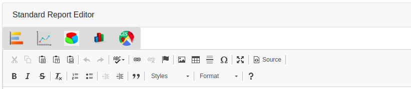

CHAPTER 3:THE EDITOR¶
TOOLBAR¶
This feature consits of numerous editing features that allows the user to add tables, charts and text to the report. The data to be disaplayed on the charts and tables are from the metadata that the user had previously selected. The charts can be displayed in different forms such as bar, line, pie charts etc. After creation of the visualization features, the user can arrange them in whatever way they wish.
